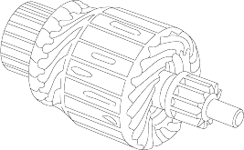
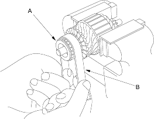
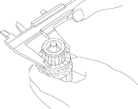
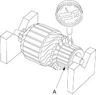

- Remove the starter, refer to '01 Civic Shop Manual (see page 4-9).
- Disassemble the starter as shown at the beginning of this procedure.
- Inspect the armature for wear or damage from contact with the permanent magnet. If there is wear or damage, replace the armature.

- Check the commutator (A) surface. If the surface is dirty or burnt, resurface with emery cloth or a lathe within the following specifications, or recondition with #500 or #600 sandpaper (B).

- Check the commutator diameter. If the diameter is below the service limit, replace the armature.
Commutator Diameter
Standard (New):
27.9 - 28.0 mm (1.098 - 1.102 in.)
Service Limit:
27.0 mm (1.142 in.)

- Measure the commutator (A) runout.
- If the commutator runout is within the service limit, check the commutator for carbon dust or brass chips between the segments.
- If the commutator runout is not within the service limit, replace the armature.
Commutator Runout
Standard (New):0.02 mm (0.001 in.) max.
Service Limit:0.05 mm (0.002 in.)
